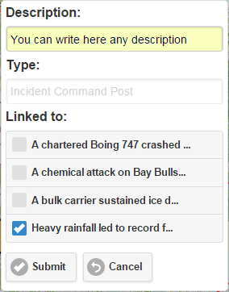

Any resource (ICP, Staging Zone, Base, Camp, Helibase or Helispot) can be linked to any active incident.

This operation will be saved in the database:
Over the map, you will see a dotted red line indicating the connection between the incident and the resource:
This line also has information. As an attribute, it is indicating the rectilinear distance between resource and incident. Sometimes it can be useful too.
Now when the user ask for the resource attributes, the application will show that the resource has one incident currently linked.
We can removed that link any time, simply unchecked the incident.